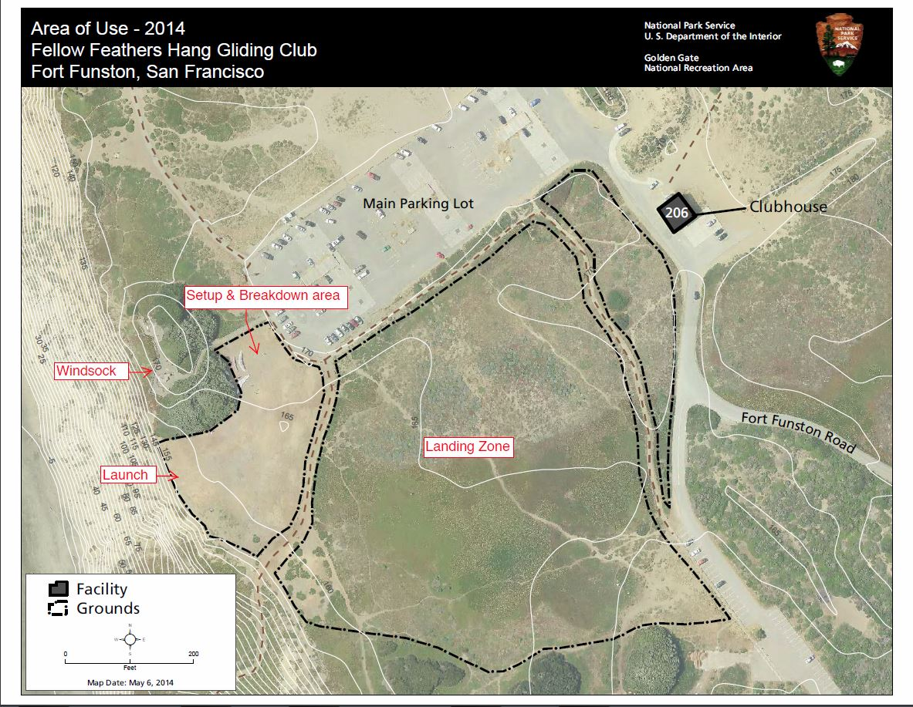
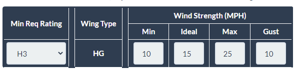
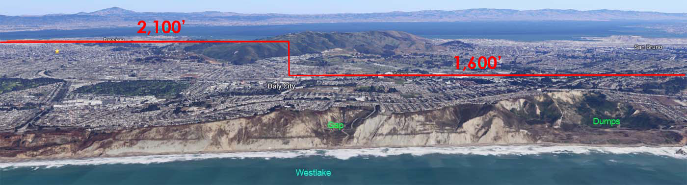
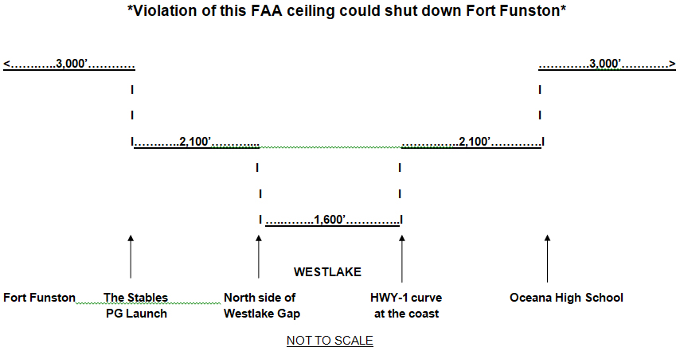
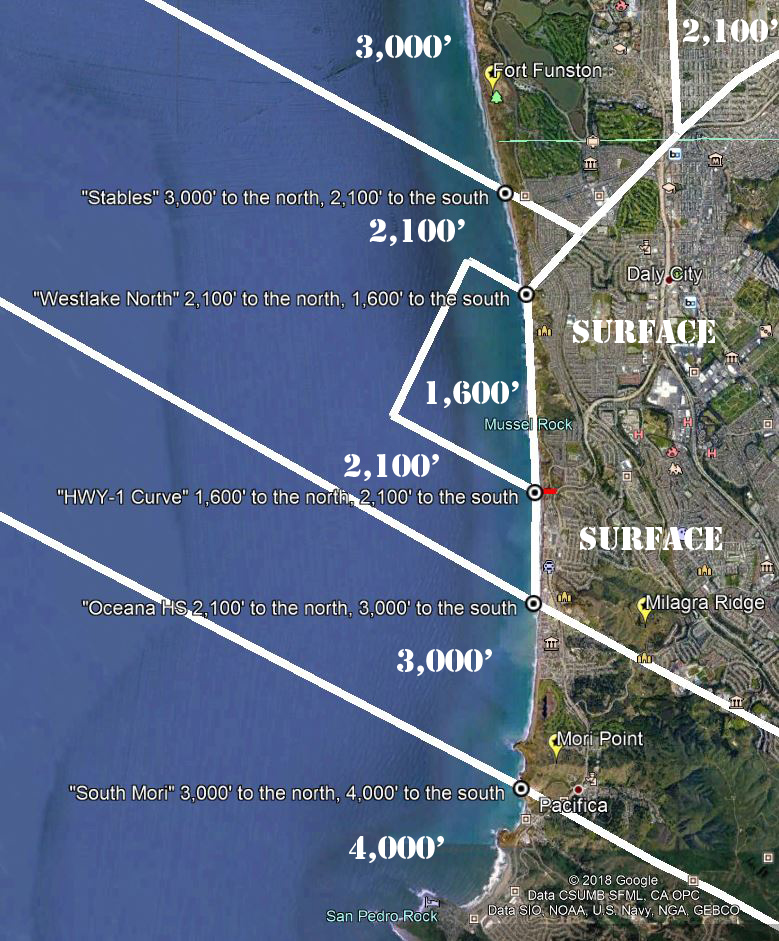

The site guide for hang gliding at Fort Funston includes Kent Harker's excellent primer, click on "Funston Primer" above.

{kind=link}
GGNRA Area of Use.
The Club Rules and Site Regulations
Read the Club Rules: http://flyfunston.org/rulesbylaws.php.html Club Rules
The Club Rules contain important information on how and where to fly Funston. The rules are critical for the safety and enjoyment of pilots and park visitors.
Pilot Requirements
Hang glider pilots must be a current member of USHPA with a minimum H3 Intermediate Rating. (Paragliding is not permited)
A helmet sticker is required to fly at Ft. Funston, the easiest way to get one is here: http://flyfunston.org/sticker.php.html
Wind Direction and Velocity

If the windsock is not fully extended, or if it is cross by more than 30 degrees, soaring will be marginal. If the windsock is full and pointing back towards the clubhouse, conditions are favorable.
Launch Tips
Before you carry out to launch, check the tide and beach-goers to see how much beach there is for landing, especially if the wind is light or cross, or really strong. Make note of any whitecaps on the ocean and monitor them during your flight.
Balance the wing 20' back from the ridge with the hang strap tight if possible. Keep in mind that balanced does not necessarily mean level. With the nose into the wind, keep the wing tip that will pass over the ridge and into the airflow first lower than the wing that is farther in from the ridge and more out of the air flow.
If the wind is strong there could be some rotor 20' or more back from the cliff edge. Don't be afraid to ask for wire help to carry your glider out, locals are happy to help with your launch! To keep it simple, best to use just one wire person, and make sure they understand your command to let go, as in yelling "CLEAR!"
Only USHPA members are allowed in the take off area while gliders are launching. You may not take off if spectators are in the launch area, so politely ask any spectators to please move behind the safety cones so you can launch. Do the same favor for other pilots who might not have noticed that spectators are close by.
Landing
Check the wind sock and streamers in the LZ to see where the bush rotor will be. Rremember that the rotor spreads out wider as it rolls downwind. Maintain a slightly higher than usual air speed throughout your approach and final for good glider control and to get through the wind gradiant without stalling. Keep your speed up until you are in ground effect. Plan ahead to land well clear of pedestrians who might be on the move; predict where they will be by the time you hit your landing spot. The "One Wingspan Rule" requires a minimum of one wingspan clearance from anyone on the ground and will be strictly enforced!
North West Wind Alert: The more north the wind direction and the stronger its velocity, the more bush rotor there will be in the LZ. Study the wind sock relative to the bush, use caution and watch the streamers in the take off and landing areas. Remember that a safe beach landing is much preferable to an accident in the LZ. There is no shame in a beach landing, we have ALL done it!
Observe International Ridge Soaring Ridge Rules
Keep track of where other gliders are and CLEAR YOUR TURNS!
Westlake
New H3 pilots need a Westlake introduction and a guided trip before flying to Westlake alone.

{kind=link}
There are critical altitude limitations for Westlake: Familiarize yourself with the FAA sectional and SFO Terminal Area Chart as there are multiple ceiling changes between Fort Funston and Mussel Rock, aka "The Dumps".

Birds Eye View of the SFO TAC:
